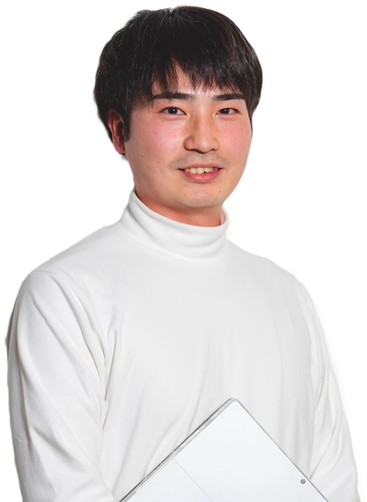

コミュニティ運営ラボ
現役オーナーが教える AI活用セミナー
コミュニティ運営、
ひとりで抱えて
いませんか？
告知・制作・動画編集を、
AIで効率化。
- イベント告知・バナー
- 動画編集・レポート
- 会員向けのお知らせ
会員と向き合う時間を、
もっと増やす。
ノーコードサロンを運営
コミュニティ相談実績
現役オーナーの実践から学ぶ
無料セミナーに申し込むオンライン（Zoom）開催
COMMUNITY OWNER’S REALITY
会員と向き合いたい。
でも、今日も
作業で一日が終わる。
こんな毎日になっていませんか？
告知だけで、夜になる。
イベントページ、バナー、SNS投稿。
毎回ゼロから作っている。録画が、たまっていく。
編集やレポート化が後回しになり、
せっかくの学びを届けきれない。会員への声かけは、あとで。
事務作業に追われ、初参加者への
フォローや個別の対話が後回しに。自分が休むと、運営も止まる。
手順も判断基準も頭の中。
スタッフに任せたくても渡せない。
その作業を、AIと仕組みに。
あなたの時間を、会員との対話や
新しい企画に使いませんか。
WHY AI?
AI時代こそ、
人と向き合う運営に
時間を使う。
コミュニティ運営者が、AIを使う3つの理由
01
情報だけでは、選ばれにくい。
AIで答えが見つかる今だからこそ、
相談できる仲間や、挑戦できる機会が
「ここにいる理由」になる。
02
続けられる運営体制をつくる。
毎回の告知・制作をAIと仕組みに。
オーナーが抱える作業を減らし、
会員へのフォローに時間を使う。
03
活動を、次の価値につなげる。
勉強会の録画を、要約や記事へ。
その場限りにせず、欠席者への共有や
次回の集客に活かす。
AIが担うのは、下書きや情報整理。
人が担うのは、
判断・対話・関係づくり。
その役割分担を、現役オーナーが解説します。
AI USE CASES
例えば、
この運営業務から。
いつもの素材や運営ルールを使って、
毎回ゼロから作る負担を減らします。
-
01
イベントの告知・バナー
日時とテーマをもとに、
告知文とバナーのたたき台を作成。
媒体ごとの書き直しもスムーズに。 -
02
動画編集・イベントレポート
録画や文字起こしをもとに、
カット案・見出し・要約を作成。
欠席者にも学びを届けやすく。 -
03
会員向けのお知らせ
開催予定や共有事項から、
週次のお知らせをまとめて下書き。
伝え漏れを防ぐ型も用意。 -
04
運営マニュアル・引き継ぎ
手順や判断基準を言語化し、
スタッフに渡せる資料へ整理。
担当者が変わっても続く運営へ。
まずは、繰り返している業務をひとつ。
あなたの運営なら、
どこからAIを使う？
現役オーナーが、具体例と進め方を解説します。
AI × HUMAN
AIに任せるほど、
人の役割が
大切になる。
運営業務を、3つの役割に分けて考えます。
大切なのは、任せる範囲を決めること。
-
01
AIを中心に進める下書き・整理を任せる。
告知文のたたき台、文字起こし、要約。
決まった型の作業を進めてもらう。例：録画から開催レポートの下書きへ
-
02
AIと人で進める案を広げ、人が選ぶ。
企画の壁打ちや、会員への返信案。
場の目的や相手に合わせて整える。例：企画案から次の勉強会テーマを選ぶ
-
03
人が中心を担う対話と、関係をつくる。
初参加者への声かけ、メンバーの紹介。
空気を読み、場の方針を決める。例：相性を考えて、二人を紹介する
作業の負担を減らした、その先へ。
会員との信頼は、
人が積み重ねる。
この役割分担を、セミナーで具体的に解説。
SEMINAR PROGRAM
「何から始めるか」が
わかる
実践セミナー。
告知・記録・引き継ぎを題材に、
現役オーナーが具体的な進め方を解説。
-
01
見つけるAIに任せる業務を見極める
毎週のお知らせ、イベント準備、録画整理。
繰り返し発生する作業から、
優先して取り組む業務を選びます。学ぶこと：業務の棚卸しと優先順位
-
02
つくるAIへの情報の渡し方を知る
過去の告知文、開催ルール、録画など、
手元の素材を使った下書きづくり。
毎回説明し直さないための型を学びます。学ぶこと：素材・ルール・指示のまとめ方
-
03
続ける確認と引き継ぎの型を学ぶ
AIの出力を、どこまで確認するか。
スタッフに、何を渡せば任せられるか。
日々の運営に組み込む手順を考えます。学ぶこと：確認基準と運営手順の残し方
最初にAIを使う業務と、
その進め方が見えてくる。
オンライン（Zoom）開催
INSTRUCTOR
現役の運営者が、
現場のAI活用を
お伝えします。
コミュニティづくりとAI活用、その両方を実践。
株式会社AI Docks 代表
松永 勇樹
Yuki Matsunaga
ノーコードサロン運営
コミュニティ運営ラボ運営
ノーコードサロン
参加者数
コミュニティ相談実績
ノーコードサロン、コミュニティ運営ラボを運営。
自社コミュニティの運営に加え、
企業のコミュニティ立ち上げ・運営支援に携わる。
告知や制作、情報整理へのAI活用を通じて、
少人数でも続けられる運営の仕組みを探求している。
大切にしていること
AIで生まれた時間を、
人とのつながりに。
会員の声を聞く。相性のよい人をつなぐ。
一緒に挑戦する機会をつくる。
その時間を増やすためのAI活用を、お伝えします。
SEMINAR INFORMATION
セミナー開催概要
コミュニティ運営者のためのAI活用セミナー
- 開催形式
- オンライン（Zoom）
- 参加費
- 無料
- 対象
- コミュニティオーナー・運営担当者
- 講師
- 松永 勇樹（株式会社AI Docks 代表）
FAQ
よくある質問
AI初心者でも参加できますか？
はい。基本的な考え方から、
告知や記録など身近な運営業務に沿って
解説します。
少人数のコミュニティでも役立ちますか？
はい。一人や少人数で運営している方にも、
繰り返す作業を減らす考え方や、
仕組みづくりの進め方をお伝えします。